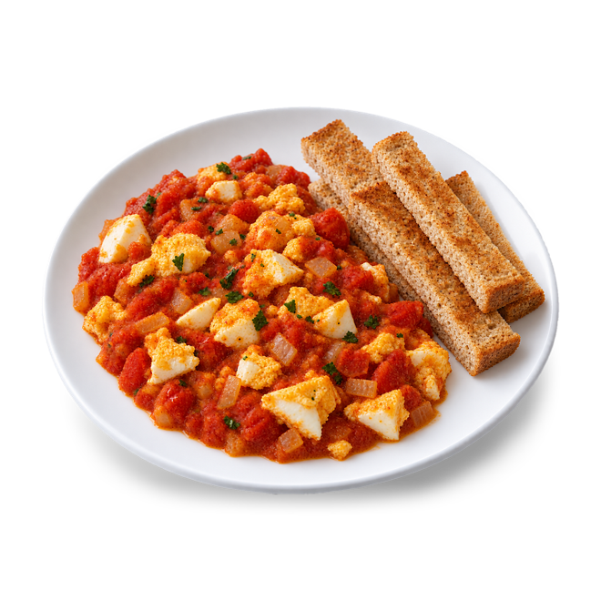

First Meal · Recipe

From 12 months
Shakshuka with toast fingers
35 min · Makes 2 adults and a toddler, with leftovers · Iron-rich
Allergens
Contains: egg, wheat
How to serve
Baby-led: Offer chopped egg and toast fingers to dip.
Ingredients · 9 items
- 4Egg
- 800 gChopped tomatoes, tinned (no added salt)
- 2Red pepper
- 1Onion
- 2 clovesGarlic
- 1 tspGround cumin
- 1 tspMild paprika
- 1 tbspOlive oil
- 4 slicesWholemeal bread
Method · 4 steps
- Soften the sliced onion and peppers in the oil for 10 minutes. Add the garlic and spices.
- Add the tomatoes and simmer for 10 minutes until thick.
- Make 4 dips and crack in the eggs. Cover and cook for 8-10 minutes until the whites and yolks are fully set.
- Serve your baby's egg chopped with sauce and toast fingers; season the family's at the table.
- Take your baby's portion out here, before any salt.
Made with First MealA daily plan for your baby, from the first taste of solid food to the family table at two: what to cook, what comes from the freezer, and when a new allergen is introduced. About First Meal
First Meal follows NHS guidance on foods to avoid, food allergies and preparing and freezing baby food. It is not medical advice: if your baby has a health condition or a diagnosed allergy, follow your doctor's advice.